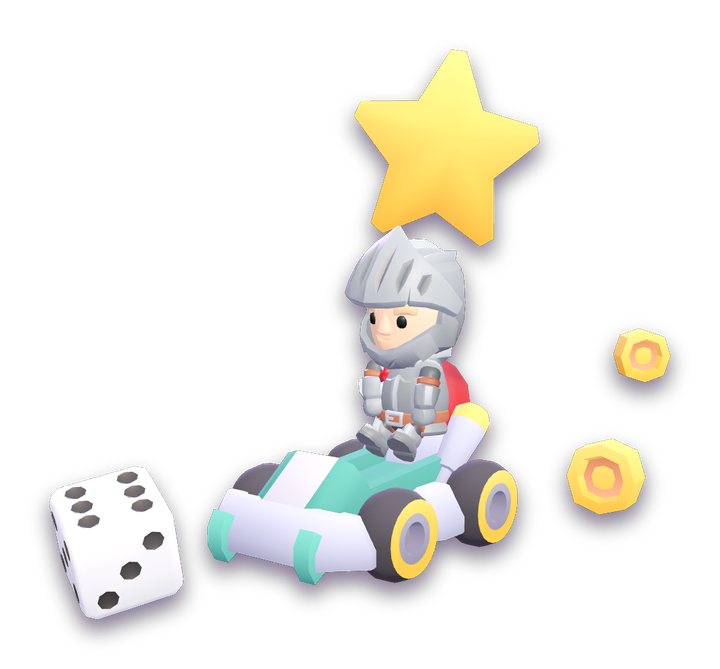

$GODOT_HEAD_INCLUDE
Dein Browser unterstützt kein HTML5-Canvas.

LUM
O
S PARTY
& NITRO DASH
Lädt …
↻ Neu laden
v1.1.6
Bitte das Gerät ins Querformat drehen
⬇ Installieren
Zum Installieren:
Teilen
→
Zum Home-Bildschirm